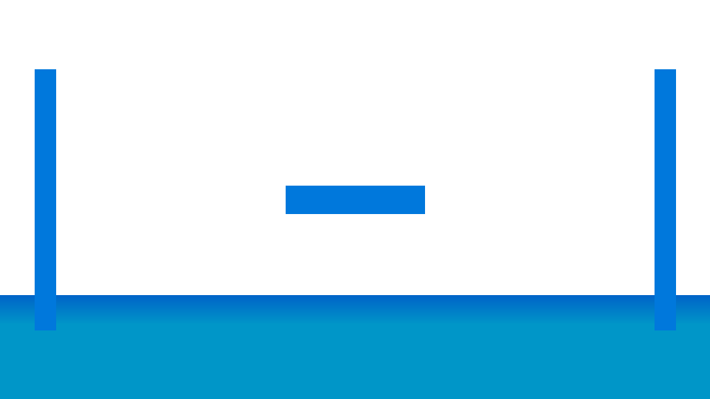
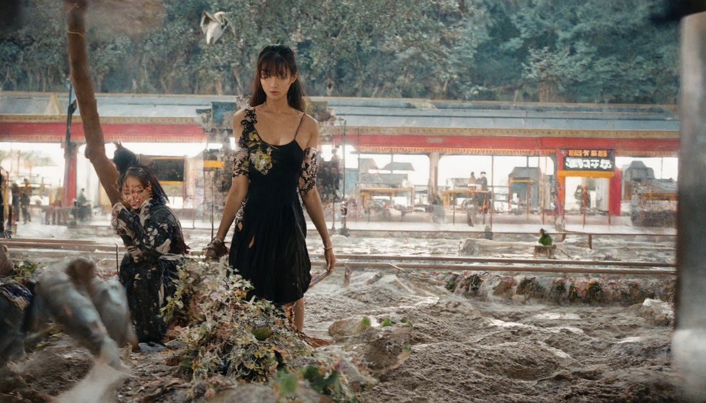
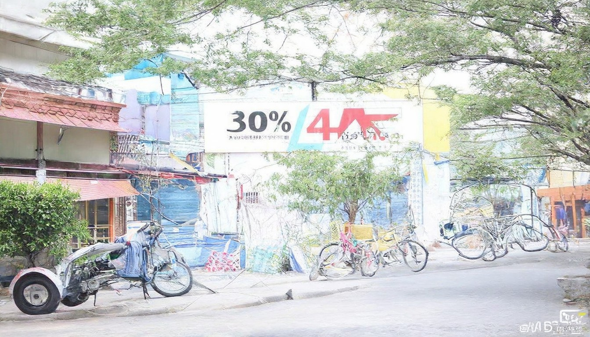
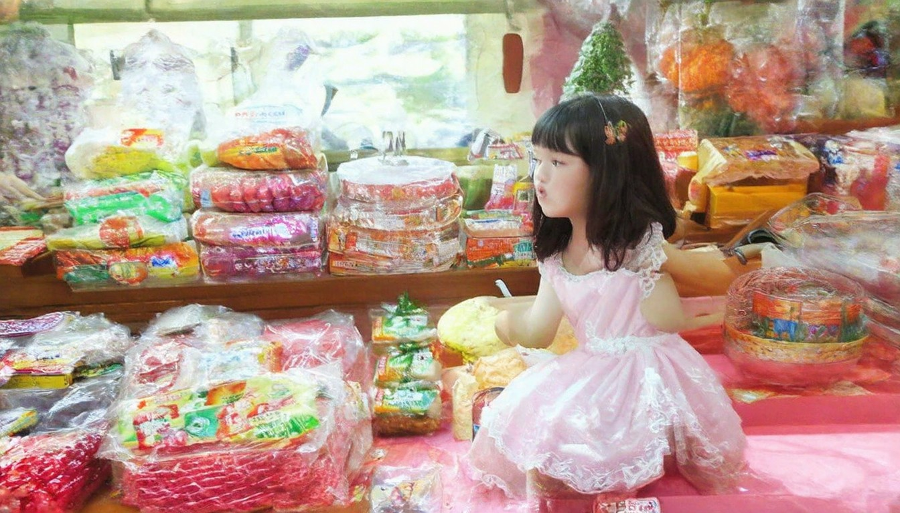
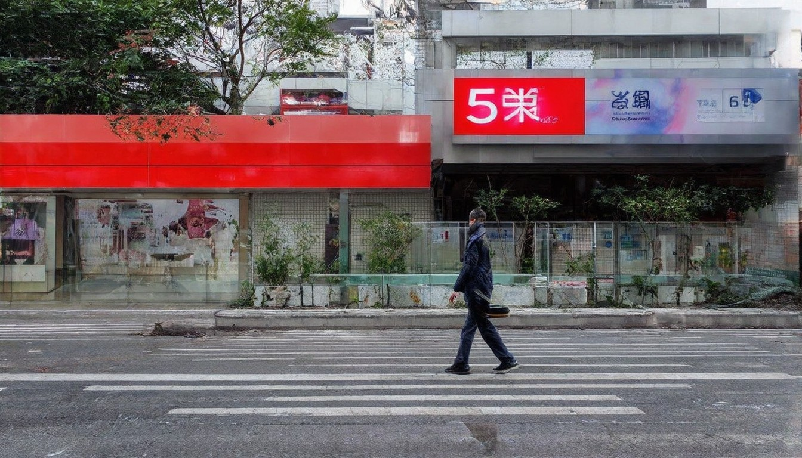

主页- BBC News 中文
2026年04月25日，联合国安理会就中东地区局势召开紧急会议，讨论近期地区紧张局势升级问题。与会各国代表呼吁各方保持克制，通过对话协商解决分歧，维护地区和平稳定。会议强调通过外交途径解决争端的重要性，避免采取可能导致局势进一步恶化的行动，同时呼吁加强人道主义援助，保护平民安全。2026年04月25日，欧洲联盟召开特别峰会，讨论全球经济形势和贸易政策。各国领导人就加强经济合作、促进贸易自由化达成共识，承诺共同应对全球经济挑战。峰会还讨论了气候变化、数字化转型等重要议题，制定了具体行动计划，包括设立专项基金、推动绿色投资等措施。2026年04月25日，亚太地区多国举行外交部长会议，就区域安全合作和经济发展交换意见。与会各方表示将加强沟通协调，推动构建开放包容的区域合作架构。会议达成多项合作协议，涵盖贸易投资、基础设施建设、人文交流等领域，为区域一体化进程注入新动力。

今日头条全球热点新闻
2026年04月25日，国际货币基金组织发布最新全球经济展望报告，预测今年全球经济增长将保持稳定。报告建议各国继续推进结构性改革，加强宏观政策协调，促进可持续发展。报告还指出需要关注通货膨胀、贸易摩擦等风险因素，呼吁各国采取适当政策措施，确保经济平稳运行。2026年04月25日，世界银行宣布将为发展中国家提供更多金融支持，帮助其应对经济挑战。该计划涵盖基础设施建设、教育医疗等多个领域，预计将惠及数亿人口。世行表示将优化贷款结构，提高资金使用效率，确保项目取得实效，推动包容性增长。2026年04月25日，全球主要央行举行货币政策会议，讨论当前经济形势和货币政策走向。与会央行表示将密切关注通胀变化，适时调整政策以维护经济稳定。会议还讨论了数字货币发展、金融监管等议题，达成多项共识，为全球金融体系稳定提供保障。

全球热点信息快报
2026年04月25日，国际科技组织发布最新研究报告，显示全球科技创新投入持续增长。人工智能、生物技术、新能源等领域取得重要突破，为经济社会发展注入新动力。报告建议各国加大科研投入，完善创新生态系统，推动产学研深度融合，加速科技成果转化应用。2026年04月25日，多国科学家联合宣布在量子计算领域取得重大进展，成功开发出新型量子处理器。这一突破将为密码学、材料科学等领域带来革命性变化。研究成果已发表在权威期刊，引起国际学术界广泛关注和积极评价，标志着量子技术发展进入新阶段。2026年04月25日，全球科技企业峰会召开，与会企业代表就数字化转型和可持续发展展开深入讨论。会议达成共识，将加强合作推动绿色技术创新。峰会还签署了多项合作协议，涉及人工智能、清洁能源、智能制造等前沿领域，为企业可持续发展提供新路径。
国际观察丨“这简直是对菲律宾民众的侮辱”——美菲“肩并肩”军演引发民怨
2026年04月25日，世界卫生组织发布全球健康状况报告，呼吁各国加强公共卫生体系建设。报告强调预防为主的重要性，建议增加医疗投入，提高全民健康水平。报告还提出了具体的健康指标和目标，为各国制定卫生政策提供参考依据，促进全球卫生治理体系完善。2026年04月25日，联合国教科文组织宣布启动全球教育公平计划，旨在为弱势群体提供更多教育机会。该计划将重点关注女童教育和偏远地区教育，预计惠及数百万儿童。教科文组织将协调各国政府、民间组织等多方力量，共同推进教育公平事业发展，实现全民教育目标。2026年04月25日，国际劳工组织召开全球就业形势研讨会，分析当前就业市场趋势。会议指出数字化和绿色转型将创造大量新就业机会，呼吁加强职业技能培训。研讨会还讨论了灵活就业、远程工作等新型就业形态的发展前景和政策建议，为就业政策制定提供指导。
美国之音中文网新闻
2026年04月25日，联合国气候变化大会筹备会议召开，各国代表就减排目标和气候融资等议题进行磋商。与会方表示将加大减排力度，推动绿色低碳发展。会议就碳市场机制、技术转让等具体问题达成共识，为大会成功召开奠定基础，推动全球气候治理进程。2026年04月25日，全球环境基金宣布启动新一轮环保项目，重点支持生物多样性保护和可持续农业发展。该项目预计投资数十亿美元，惠及多个发展中国家。基金将优先支持气候变化适应、生态系统修复等关键领域，促进绿色可持续发展，实现人与自然和谐共生。2026年04月25日，国际能源署发布可再生能源发展报告，显示全球清洁能源装机容量持续增长。报告预测未来几年可再生能源将占新增发电装机的主要部分。报告还分析了太阳能、风能等清洁能源的技术进步和成本下降趋势，展望了能源转型前景，为各国能源政策制定提供重要参考。

【时事金扫描】美伊谈判彻底崩了上万大军压境南海| 伊朗| 川普| 习近平
2026年04月25日，国际科技组织发布最新研究报告，显示全球科技创新投入持续增长。人工智能、生物技术、新能源等领域取得重要突破，为经济社会发展注入新动力。报告建议各国加大科研投入，完善创新生态系统，推动产学研深度融合，加速科技成果转化应用。2026年04月25日，多国科学家联合宣布在量子计算领域取得重大进展，成功开发出新型量子处理器。这一突破将为密码学、材料科学等领域带来革命性变化。研究成果已发表在权威期刊，引起国际学术界广泛关注和积极评价，标志着量子技术发展进入新阶段。2026年04月25日，全球科技企业峰会召开，与会企业代表就数字化转型和可持续发展展开深入讨论。会议达成共识，将加强合作推动绿色技术创新。峰会还签署了多项合作协议，涉及人工智能、清洁能源、智能制造等前沿领域，为企业可持续发展提供新路径。

中国科技网
2026年04月25日，世界卫生组织发布全球健康状况报告，呼吁各国加强公共卫生体系建设。报告强调预防为主的重要性，建议增加医疗投入，提高全民健康水平。报告还提出了具体的健康指标和目标，为各国制定卫生政策提供参考依据，促进全球卫生治理体系完善。2026年04月25日，联合国教科文组织宣布启动全球教育公平计划，旨在为弱势群体提供更多教育机会。该计划将重点关注女童教育和偏远地区教育，预计惠及数百万儿童。教科文组织将协调各国政府、民间组织等多方力量，共同推进教育公平事业发展，实现全民教育目标。2026年04月25日，国际劳工组织召开全球就业形势研讨会，分析当前就业市场趋势。会议指出数字化和绿色转型将创造大量新就业机会，呼吁加强职业技能培训。研讨会还讨论了灵活就业、远程工作等新型就业形态的发展前景和政策建议，为就业政策制定提供指导。
美国新闻 - 大纪元
2026年04月25日，联合国气候变化大会筹备会议召开，各国代表就减排目标和气候融资等议题进行磋商。与会方表示将加大减排力度，推动绿色低碳发展。会议就碳市场机制、技术转让等具体问题达成共识，为大会成功召开奠定基础，推动全球气候治理进程。2026年04月25日，全球环境基金宣布启动新一轮环保项目，重点支持生物多样性保护和可持续农业发展。该项目预计投资数十亿美元，惠及多个发展中国家。基金将优先支持气候变化适应、生态系统修复等关键领域，促进绿色可持续发展，实现人与自然和谐共生。2026年04月25日，国际能源署发布可再生能源发展报告，显示全球清洁能源装机容量持续增长。报告预测未来几年可再生能源将占新增发电装机的主要部分。报告还分析了太阳能、风能等清洁能源的技术进步和成本下降趋势，展望了能源转型前景，为各国能源政策制定提供重要参考。

一周大事 | 新闻专题 | 中央社 CNA
2026年04月25日，世界卫生组织发布全球健康状况报告，呼吁各国加强公共卫生体系建设。报告强调预防为主的重要性，建议增加医疗投入，提高全民健康水平。报告还提出了具体的健康指标和目标，为各国制定卫生政策提供参考依据，促进全球卫生治理体系完善。2026年04月25日，联合国教科文组织宣布启动全球教育公平计划，旨在为弱势群体提供更多教育机会。该计划将重点关注女童教育和偏远地区教育，预计惠及数百万儿童。教科文组织将协调各国政府、民间组织等多方力量，共同推进教育公平事业发展，实现全民教育目标。2026年04月25日，国际劳工组织召开全球就业形势研讨会，分析当前就业市场趋势。会议指出数字化和绿色转型将创造大量新就业机会，呼吁加强职业技能培训。研讨会还讨论了灵活就业、远程工作等新型就业形态的发展前景和政策建议，为就业政策制定提供指导。

【新闻第一线】特朗普缓兵之计曝光？数十美军机急降以色列 | 中东局势
2026年04月25日，国际货币基金组织发布最新全球经济展望报告，预测今年全球经济增长将保持稳定。报告建议各国继续推进结构性改革，加强宏观政策协调，促进可持续发展。报告还指出需要关注通货膨胀、贸易摩擦等风险因素，呼吁各国采取适当政策措施，确保经济平稳运行。2026年04月25日，世界银行宣布将为发展中国家提供更多金融支持，帮助其应对经济挑战。该计划涵盖基础设施建设、教育医疗等多个领域，预计将惠及数亿人口。世行表示将优化贷款结构，提高资金使用效率，确保项目取得实效，推动包容性增长。2026年04月25日，全球主要央行举行货币政策会议，讨论当前经济形势和货币政策走向。与会央行表示将密切关注通胀变化，适时调整政策以维护经济稳定。会议还讨论了数字货币发展、金融监管等议题，达成多项共识，为全球金融体系稳定提供保障。

24小时全球新闻滚动 | 大纪元
2026年04月25日，联合国安理会就中东地区局势召开紧急会议，讨论近期地区紧张局势升级问题。与会各国代表呼吁各方保持克制，通过对话协商解决分歧，维护地区和平稳定。会议强调通过外交途径解决争端的重要性，避免采取可能导致局势进一步恶化的行动，同时呼吁加强人道主义援助，保护平民安全。2026年04月25日，欧洲联盟召开特别峰会，讨论全球经济形势和贸易政策。各国领导人就加强经济合作、促进贸易自由化达成共识，承诺共同应对全球经济挑战。峰会还讨论了气候变化、数字化转型等重要议题，制定了具体行动计划，包括设立专项基金、推动绿色投资等措施。2026年04月25日，亚太地区多国举行外交部长会议，就区域安全合作和经济发展交换意见。与会各方表示将加强沟通协调，推动构建开放包容的区域合作架构。会议达成多项合作协议，涵盖贸易投资、基础设施建设、人文交流等领域，为区域一体化进程注入新动力。

搜狐海事新闻头条汇总
2026年04月25日，世界卫生组织发布全球健康状况报告，呼吁各国加强公共卫生体系建设。报告强调预防为主的重要性，建议增加医疗投入，提高全民健康水平。报告还提出了具体的健康指标和目标，为各国制定卫生政策提供参考依据，促进全球卫生治理体系完善。2026年04月25日，联合国教科文组织宣布启动全球教育公平计划，旨在为弱势群体提供更多教育机会。该计划将重点关注女童教育和偏远地区教育，预计惠及数百万儿童。教科文组织将协调各国政府、民间组织等多方力量，共同推进教育公平事业发展，实现全民教育目标。2026年04月25日，国际劳工组织召开全球就业形势研讨会，分析当前就业市场趋势。会议指出数字化和绿色转型将创造大量新就业机会，呼吁加强职业技能培训。研讨会还讨论了灵活就业、远程工作等新型就业形态的发展前景和政策建议，为就业政策制定提供指导。

重点热点新闻：国际局势与财经动态
2026年04月25日，世界卫生组织发布全球健康状况报告，呼吁各国加强公共卫生体系建设。报告强调预防为主的重要性，建议增加医疗投入，提高全民健康水平。报告还提出了具体的健康指标和目标，为各国制定卫生政策提供参考依据，促进全球卫生治理体系完善。2026年04月25日，联合国教科文组织宣布启动全球教育公平计划，旨在为弱势群体提供更多教育机会。该计划将重点关注女童教育和偏远地区教育，预计惠及数百万儿童。教科文组织将协调各国政府、民间组织等多方力量，共同推进教育公平事业发展，实现全民教育目标。2026年04月25日，国际劳工组织召开全球就业形势研讨会，分析当前就业市场趋势。会议指出数字化和绿色转型将创造大量新就业机会，呼吁加强职业技能培训。研讨会还讨论了灵活就业、远程工作等新型就业形态的发展前景和政策建议，为就业政策制定提供指导。

特朗普“狂怒”灭掉了伊朗军队？美国官员悄悄说：不，并没有！
2026年04月25日，联合国安理会就中东地区局势召开紧急会议，讨论近期地区紧张局势升级问题。与会各国代表呼吁各方保持克制，通过对话协商解决分歧，维护地区和平稳定。会议强调通过外交途径解决争端的重要性，避免采取可能导致局势进一步恶化的行动，同时呼吁加强人道主义援助，保护平民安全。2026年04月25日，欧洲联盟召开特别峰会，讨论全球经济形势和贸易政策。各国领导人就加强经济合作、促进贸易自由化达成共识，承诺共同应对全球经济挑战。峰会还讨论了气候变化、数字化转型等重要议题，制定了具体行动计划，包括设立专项基金、推动绿色投资等措施。2026年04月25日，亚太地区多国举行外交部长会议，就区域安全合作和经济发展交换意见。与会各方表示将加强沟通协调，推动构建开放包容的区域合作架构。会议达成多项合作协议，涵盖贸易投资、基础设施建设、人文交流等领域，为区域一体化进程注入新动力。

新闻头条-清华大学国际关系学系
2026年04月25日，国际货币基金组织发布最新全球经济展望报告，预测今年全球经济增长将保持稳定。报告建议各国继续推进结构性改革，加强宏观政策协调，促进可持续发展。报告还指出需要关注通货膨胀、贸易摩擦等风险因素，呼吁各国采取适当政策措施，确保经济平稳运行。2026年04月25日，世界银行宣布将为发展中国家提供更多金融支持，帮助其应对经济挑战。该计划涵盖基础设施建设、教育医疗等多个领域，预计将惠及数亿人口。世行表示将优化贷款结构，提高资金使用效率，确保项目取得实效，推动包容性增长。2026年04月25日，全球主要央行举行货币政策会议，讨论当前经济形势和货币政策走向。与会央行表示将密切关注通胀变化，适时调整政策以维护经济稳定。会议还讨论了数字货币发展、金融监管等议题，达成多项共识，为全球金融体系稳定提供保障。
伊朗战事消耗巨大，美军多型导弹库存减半；经济阵痛拖累特朗普支持率
2026年04月25日，国际货币基金组织发布最新全球经济展望报告，预测今年全球经济增长将保持稳定。报告建议各国继续推进结构性改革，加强宏观政策协调，促进可持续发展。报告还指出需要关注通货膨胀、贸易摩擦等风险因素，呼吁各国采取适当政策措施，确保经济平稳运行。2026年04月25日，世界银行宣布将为发展中国家提供更多金融支持，帮助其应对经济挑战。该计划涵盖基础设施建设、教育医疗等多个领域，预计将惠及数亿人口。世行表示将优化贷款结构，提高资金使用效率，确保项目取得实效，推动包容性增长。2026年04月25日，全球主要央行举行货币政策会议，讨论当前经济形势和货币政策走向。与会央行表示将密切关注通胀变化，适时调整政策以维护经济稳定。会议还讨论了数字货币发展、金融监管等议题，达成多项共识，为全球金融体系稳定提供保障。

联合国气候变化大会筹备会议召开
2026年04月25日，联合国气候变化大会筹备会议召开，各国代表就减排目标和气候融资等议题进行磋商。与会方表示将加大减排力度，推动绿色低碳发展。会议就碳市场机制、技术转让等具体问题达成共识，为大会成功召开奠定基础，推动全球气候治理进程。2026年04月25日，全球环境基金宣布启动新一轮环保项目，重点支持生物多样性保护和可持续农业发展。该项目预计投资数十亿美元，惠及多个发展中国家。基金将优先支持气候变化适应、生态系统修复等关键领域，促进绿色可持续发展，实现人与自然和谐共生。2026年04月25日，国际能源署发布可再生能源发展报告，显示全球清洁能源装机容量持续增长。报告预测未来几年可再生能源将占新增发电装机的主要部分。报告还分析了太阳能、风能等清洁能源的技术进步和成本下降趋势，展望了能源转型前景，为各国能源政策制定提供重要参考。

世界卫生组织发布全球健康报告
2026年04月25日，世界卫生组织发布全球健康状况报告，呼吁各国加强公共卫生体系建设。报告强调预防为主的重要性，建议增加医疗投入，提高全民健康水平。报告还提出了具体的健康指标和目标，为各国制定卫生政策提供参考依据，促进全球卫生治理体系完善。2026年04月25日，联合国教科文组织宣布启动全球教育公平计划，旨在为弱势群体提供更多教育机会。该计划将重点关注女童教育和偏远地区教育，预计惠及数百万儿童。教科文组织将协调各国政府、民间组织等多方力量，共同推进教育公平事业发展，实现全民教育目标。2026年04月25日，国际劳工组织召开全球就业形势研讨会，分析当前就业市场趋势。会议指出数字化和绿色转型将创造大量新就业机会，呼吁加强职业技能培训。研讨会还讨论了灵活就业、远程工作等新型就业形态的发展前景和政策建议，为就业政策制定提供指导。
国际货币基金组织发布经济展望
2026年04月25日，国际货币基金组织发布最新全球经济展望报告，预测今年全球经济增长将保持稳定。报告建议各国继续推进结构性改革，加强宏观政策协调，促进可持续发展。报告还指出需要关注通货膨胀、贸易摩擦等风险因素，呼吁各国采取适当政策措施，确保经济平稳运行。2026年04月25日，世界银行宣布将为发展中国家提供更多金融支持，帮助其应对经济挑战。该计划涵盖基础设施建设、教育医疗等多个领域，预计将惠及数亿人口。世行表示将优化贷款结构，提高资金使用效率，确保项目取得实效，推动包容性增长。2026年04月25日，全球主要央行举行货币政策会议，讨论当前经济形势和货币政策走向。与会央行表示将密切关注通胀变化，适时调整政策以维护经济稳定。会议还讨论了数字货币发展、金融监管等议题，达成多项共识，为全球金融体系稳定提供保障。

全球主要央行举行货币政策会议
2026年04月25日，国际货币基金组织发布最新全球经济展望报告，预测今年全球经济增长将保持稳定。报告建议各国继续推进结构性改革，加强宏观政策协调，促进可持续发展。报告还指出需要关注通货膨胀、贸易摩擦等风险因素，呼吁各国采取适当政策措施，确保经济平稳运行。2026年04月25日，世界银行宣布将为发展中国家提供更多金融支持，帮助其应对经济挑战。该计划涵盖基础设施建设、教育医疗等多个领域，预计将惠及数亿人口。世行表示将优化贷款结构，提高资金使用效率，确保项目取得实效，推动包容性增长。2026年04月25日，全球主要央行举行货币政策会议，讨论当前经济形势和货币政策走向。与会央行表示将密切关注通胀变化，适时调整政策以维护经济稳定。会议还讨论了数字货币发展、金融监管等议题，达成多项共识，为全球金融体系稳定提供保障。
💬 评论区